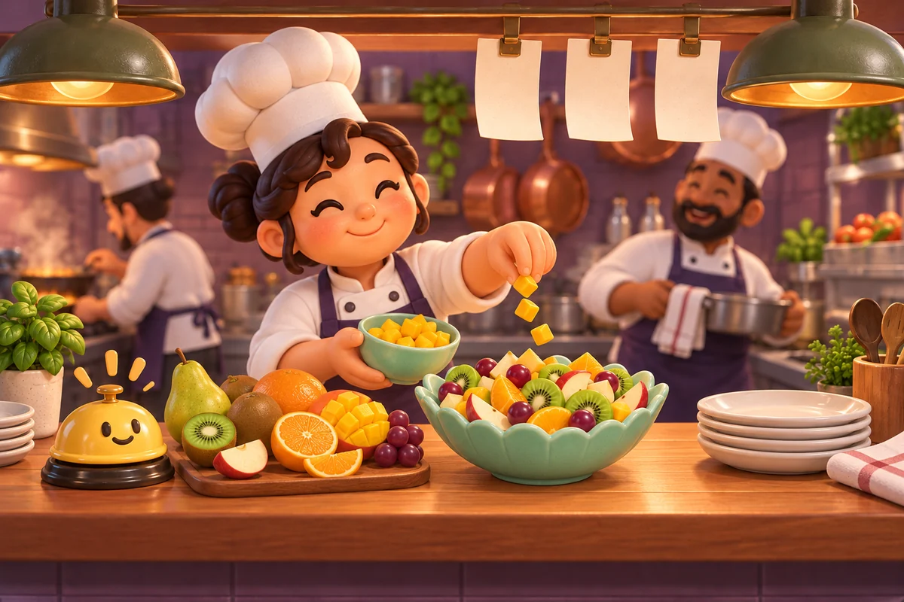
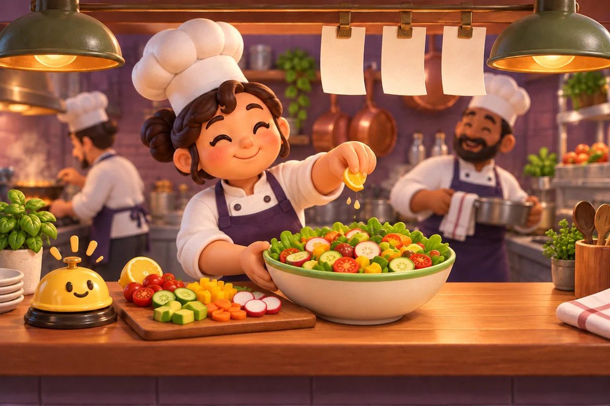
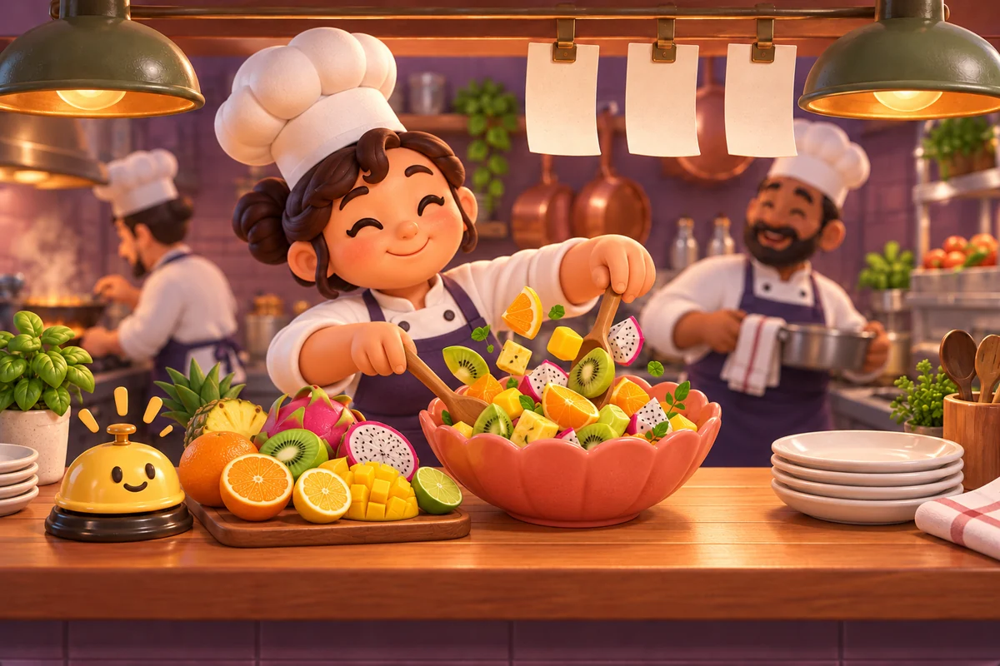
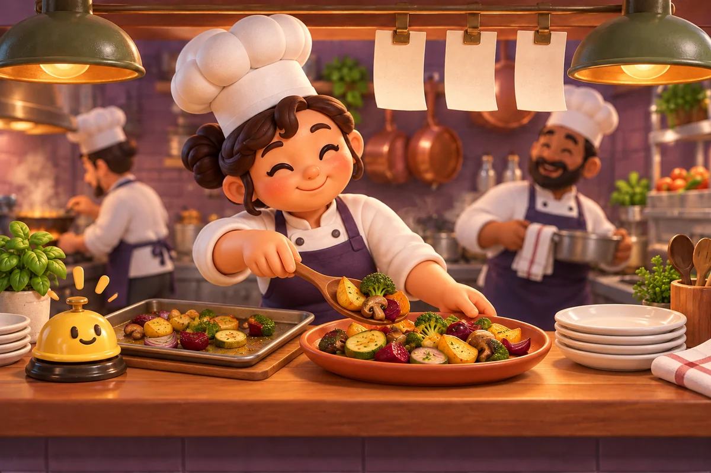
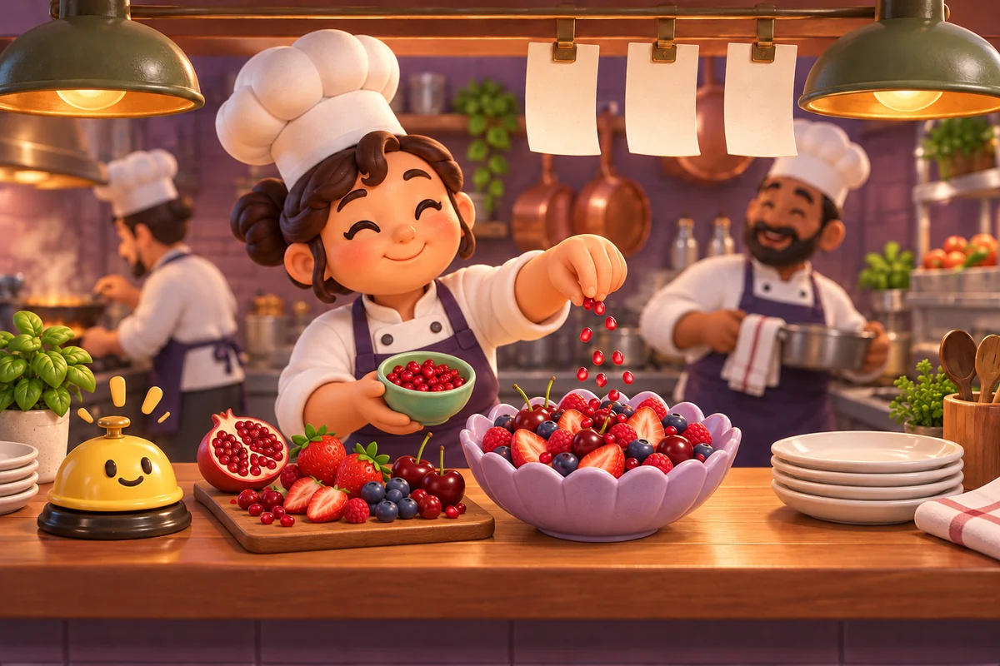
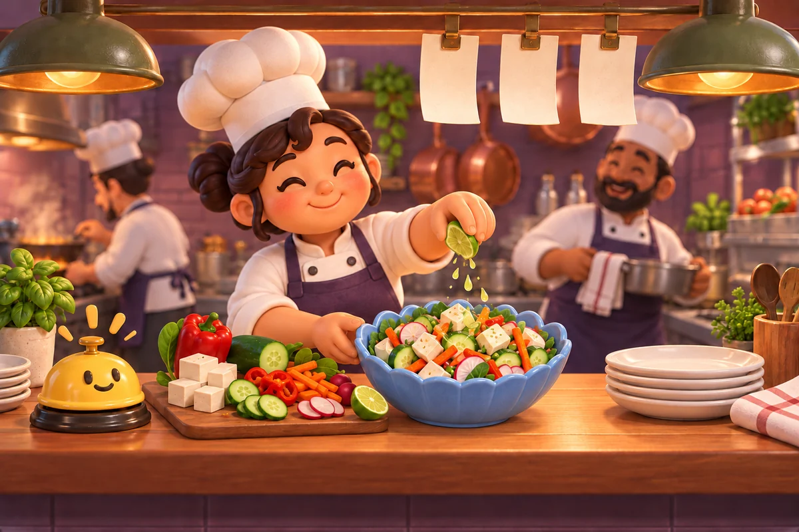
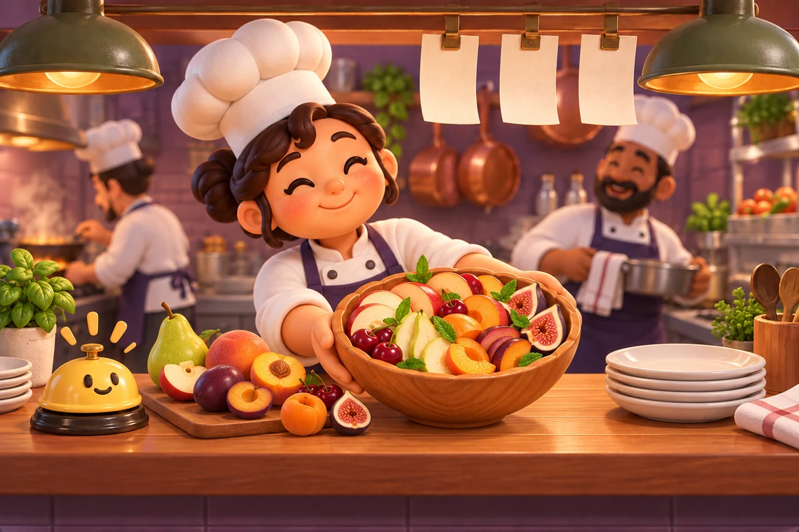
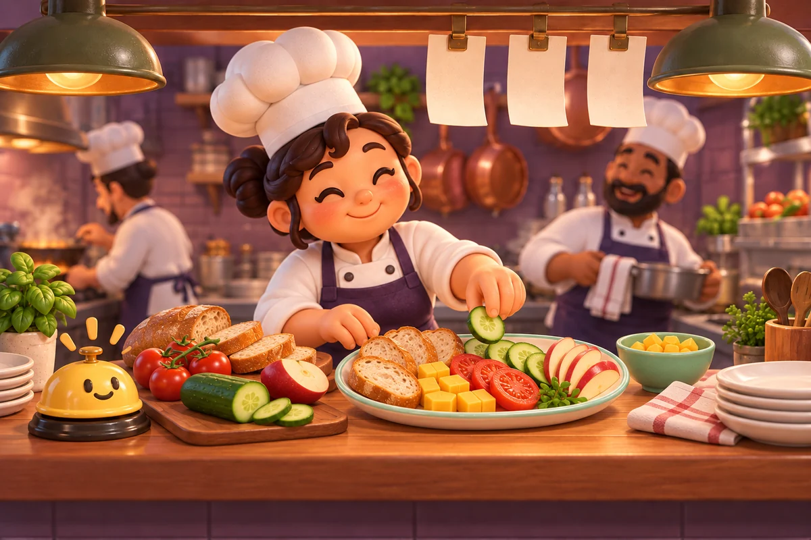
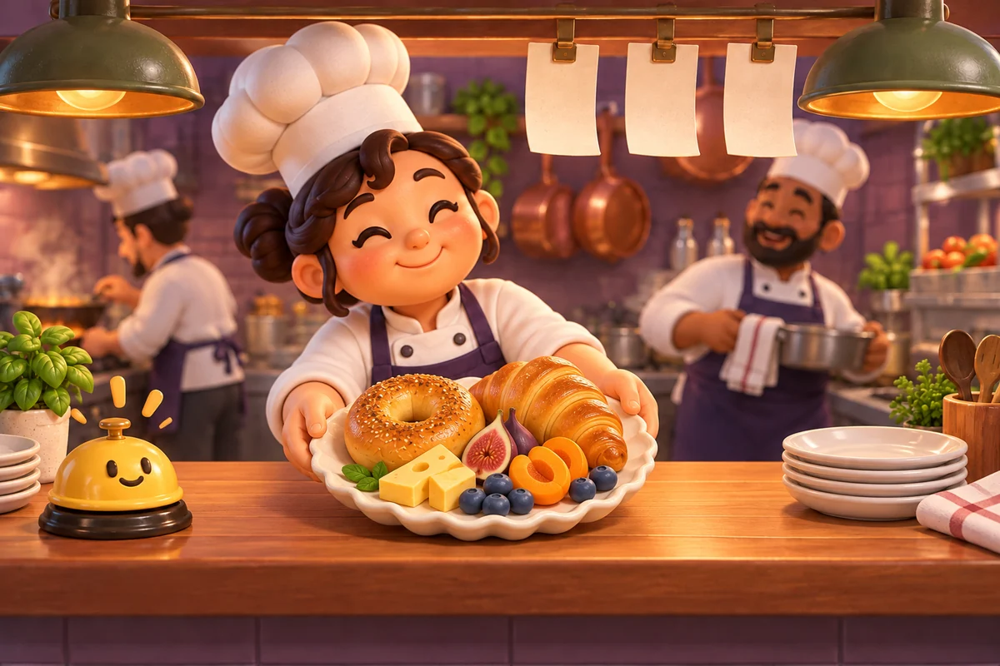

PAGE 01
Slice the apple, kiwi, pear, orange, mango and grapes, then serve a colorful fruit salad.
10 sentences. 10 pictures.

Slice the apple, kiwi, pear, orange, mango and grapes, then serve a colorful fruit salad.

Chop tomato, cucumber, yellow pepper, radish, avocado and carrot, then add lemon to our garden salad.
Chop pumpkin, onion, potato, carrot and celery, then serve a warm bowl of pumpkin soup.

Mix orange, lemon, mango, pineapple, lime, dragon fruit and kiwi for a bright tropical bowl.

Cut potato, beet, onion, zucchini, mushroom and broccoli, then plate the roasted vegetables.

Slice strawberry, raspberry, blueberry and cherry, then add pomegranate to our berry bowl.

Cut tofu, cucumber, pepper, carrot and radish, then squeeze lime over our crunchy tofu salad.

Slice apple, pear, peach, plum, apricot, cherry and fig, then serve a sweet orchard bowl.

Slice bread, cheese, tomato, cucumber and apple, then arrange a fresh picnic plate.

Plate bagel, croissant, cheese, fig, apricot and blueberry for a cheerful bakery breakfast.
Same cute stylized woman chef with warm peach skin, rosy cheeks, dark brown hair in two low side buns and front curl, cream puffy chef toque, white double-breasted coat and plum apron. Same cozy restaurant kitchen pass: warm wooden counter, plum tiled backsplash, hanging copper pans, two green pendant lamps, shelf with stacked ivory plates and herbs, three blank hanging paper tickets, friendly yellow service bell left. Same bearded warm brown-skinned male sous chef wearing white toque/coat and plum apron softly blurred in background right. Main chef prepares or finishes exactly ONE featured dish per page. Match food shapes and soft painted textures of game recipe cards, no photorealism, no extra featured dishes.
← All stories